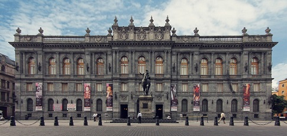
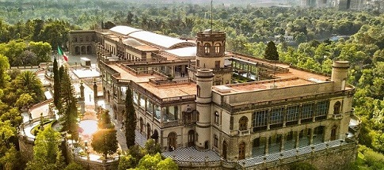

Museos en México |
|||||
|  | Museo Nacional de Arte (MUNAL) |
Ubicado en el Centro Histórico de la Ciudad de México | Está organizado en 3 grandes periodos que abarcan y sintetizan la historia del arte mexicano desde mediados del siglo XVI hasta la primera mitad del siglo XX | ||
|  | Museo Nacional de Historia | Ubicado en el Bosque de Chapultepec, Ciudad de México | Cuenta con 12 salas peramantes y 22 salas en las que se recrean las habitaciones de Maximiliano y Carlota y del presidente Porfirio Díaz, además de una sala que recuerda el asalto al Castillo de Chapultepec. | ||